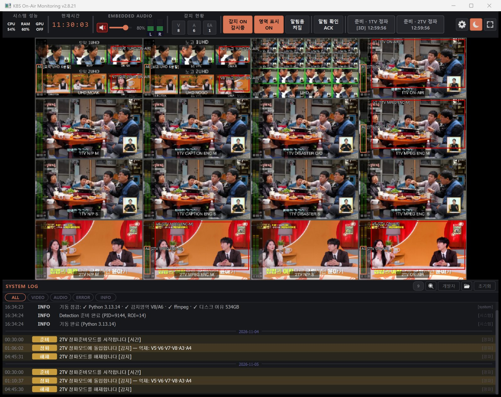
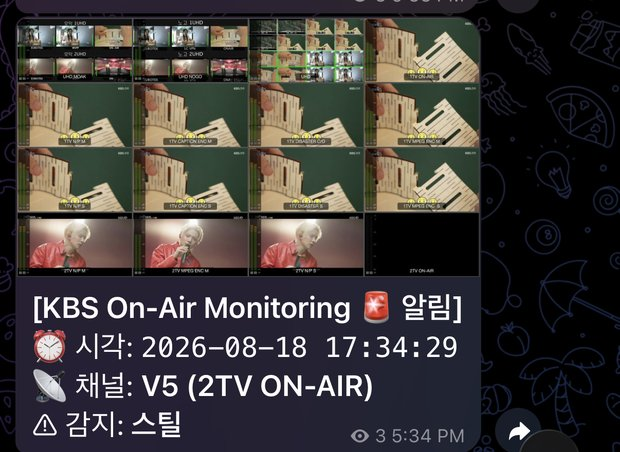
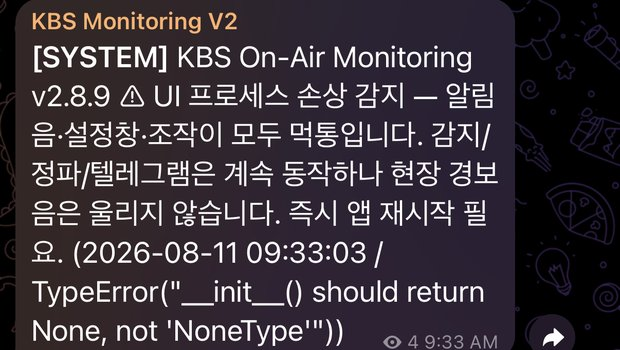

16채널 방송 화면과 소리를 0.2초마다 살펴 블랙·정지화면·오디오 이상을 즉시 알리고, 사고 앞뒤 영상을 남기며, 고장이 나도 스스로 복구하는 무인 감시 프로그램

전주총국이 몇 년 전 만든 블랙 감지 프로그램은 화면이 멈춘 사고를 알아채지 못했다. 실제로 정지화면 사고를 놓친 일이 있었다.
이전 버전(v1)은 화면과 감지가 한 덩어리라, 장기 운영 중 화면 쪽이 바쁘거나 멈추면 감지까지 같이 멈췄다. 무인 감시에서 가장 위험한 고장이다.
감지영역의 98%가 아주 어두운 상태 5초. 로고만 남은 검은 장면·움직이는 자막은 제외
감지영역 25칸이 모두 거의 안 움직이는 상태 120초
화면 속 오디오 미터의 초록 막대가 사라진 상태 60초
실제 소리가 -50dB 이하 60초
시간은 기본값이며 국별로 조정한다. 정상 복귀도 일정 시간 이어져야 인정해(히스테리시스) 경계에서 알림이 깜빡이지 않는다.
이상 채널의 감지영역이 깜빡이고 경보음이 반복된다. ACK로 끄면 같은 이상은 다시 울리지 않는다.
채널 사진과 함께 즉시 발송, 복구되면 지속 시간을 알린다. 화면 전체가 꺼지면 채널별 알림을 1통으로 묶는다.
사고 10초 전부터 10초 뒤까지 소리와 함께 MP4로 저장(기본값). 원인 분석·보고에 그대로 쓴다.
늦어도 2026년 5월부터 전주총국 감시PC에서 실제 방송을 감시하고 있다. 아래는 운영 로그가 남아 있는 90일의 기록이다.
| 항목 | 결과 | 확인 방법 |
|---|---|---|
| 연속 운영 | 90일 (2026.8.7 ~ 11.5) | 10분마다 남는 상태 기록 |
| 가동률 | 99.89% 이상 | 기록이 15분 넘게 빈 8구간(대부분 버전 교체)을 모두 정지로 계산 |
| 버전 교체 | 10회 (v2.8.9 → v2.8.21) | 운영하면서 고치고 바로 반영 |
| 감지 부분 자동 재기동 | 3회, 모두 1초 안에 | 사람 손 없이 복구. 2건은 윈도우 시계 보정 오판 → 수정함 |
| 메모리 | 41일 · 44일 연속에도 증가 없음 | 장기 누수 없음 |
| 자동 테스트 | 94개 모두 통과 | 운영 환경(Python 3.13)에서 2026.11.5 실행 |
| 일시 | 복구까지 |
|---|---|
| 10.3 14:43 | 2초 |
| 10.4 09:37 | 3초 |
| 10.21 21:11 | 3초 |
| 10.27 08:57 | 1초 |
| 10.30 18:27 | 1초 |
예전엔 근무자가 알아채고 프로그램을 재시작할 때까지 전 채널이 검게 굳어 있던 상황이다.
| 종류 | 알림 | 복구 |
|---|---|---|
| 블랙 | 27 | 11 |
| 정지화면 | 6 | 5 |
| 임베디드 오디오 무음 | 2 | 2 |
| 오디오 레벨미터 | 1 | — |
| 정파 진입 / 해제 | 124 | 111 |
이 기간 실제 방송사고는 없었다. 알린 이상은 대부분 모니터링·전송 장비 쪽 오류였다. 예: 10.14 새벽 2시 39분 노고 1UHD 정지화면 — 근무자가 화면을 보지 않는 시간에 알리고 녹화를 남김.
켜 두고 4~5일 지나면 화면 쪽만 조용히 고장 나 경보음·설정창이 먹통이 되는 일이 6번 있었다. 재현이 안 돼 용의자를 하나씩 빼며 좁혔다.
기존 감시PC와 캡처보드에 무료 오픈소스(Python, PySide6, OpenCV, ffmpeg)만 썼다. 장비·라이선스 구매·외주 없이 AI 도구 구독으로 개발.
이전 버전(v1)이 춘천·제주·대구·대전·부산·광주·송신인프라부 등에 배포됐다. 지금 v1을 쓰는 곳은 같은 장비 그대로 v2로 교체할 수 있다.
python313_전환.bat — 실행 환경 자동 구성install_ffmpeg.bat — 녹화 소리 합성 도구실행.bat — 켜기 (자동 시작 등록 가능)개발자가 현장에 가지 않아도 되도록 설계했다. 문제가 생기면 시스템 알림 텔레그램이 무엇을 확인할지 알려 준다.
근무자용(경보가 울리면·시스템 알림이 오면)과 관리 담당용(설치·설정·문제 해결)으로 나눈 안내서가 인터넷 없이 열린다. 인쇄하면 그대로 매뉴얼이 된다.


| 출품자 | 맡은 일 |
|---|---|
| 김민우 | 기획 · 개발 전담 · 발표 |
| 김대현 | 개발 보조 — 현장 장비 상태 확인 · 사용 의견 |
| 박인근 | 개발 보조 — 사용안내 검토 · 폰 화면 확인 |
| 개발 기록 | 규모 |
|---|---|
| 개발 기간 | 2026.4.18 ~ 운영 중 |
| 변경 기록(커밋) | 203건 |
| 코드 | 약 18,000줄 |
| 사고 분석 문서 | 6건 |
AI 개발 도구를 활용해 소수 인원이 짧은 기간에 만들고, 운영하면서 나온 문제를 기록·분석해 바로 고치는 방식으로 다듬었다.